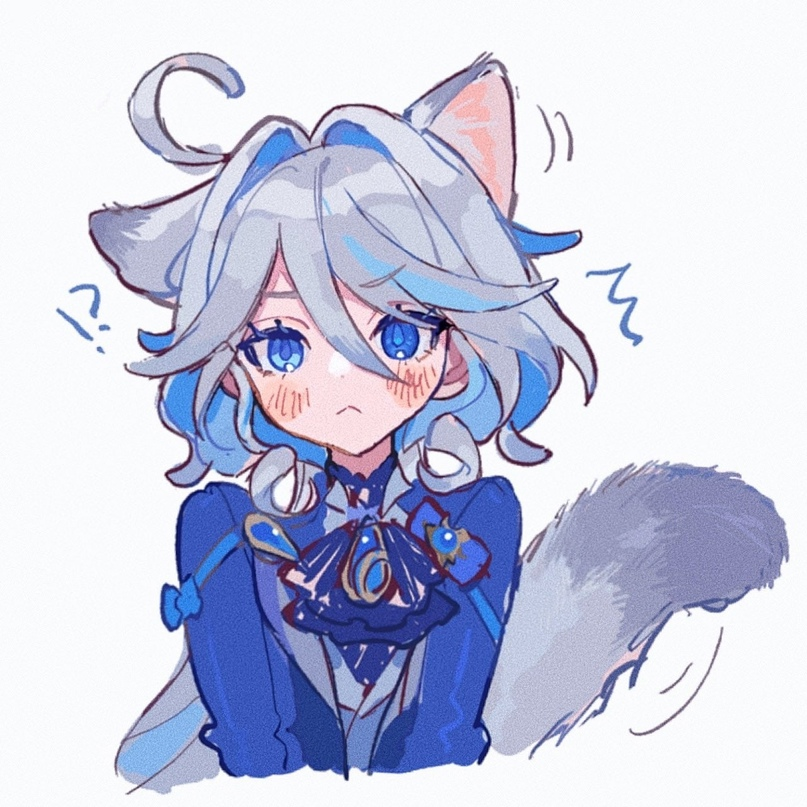

Sumi Arima Semai — персонаж из вселенной Telegram в период 2024-2025 года.
Родился 22 октября 2009 года в городе Кызылорда и с тех пор живёт там. В настоящее время учится в 10-м классе школы-лицея №282. На последнем пробном тестировании набрал 80 баллов из 140 и оказался в числе лучших.
В детстве не увлекался особыми хобби, и сейчас тоже ничем не интересуется, за исключением игры в Genshin Impact и активного времяпрепровождения во дворе.
